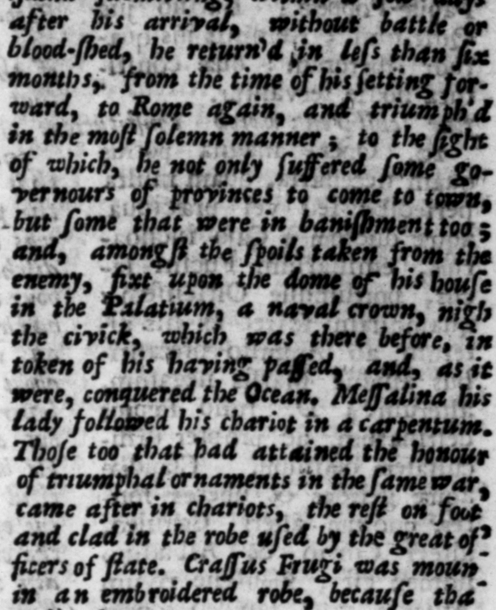
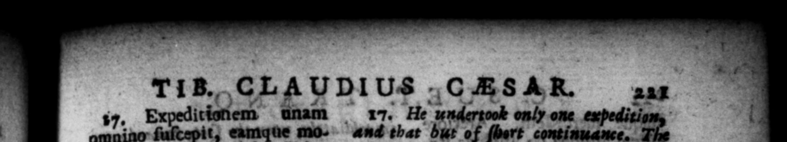
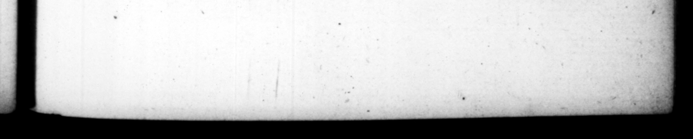

17. dica m, cum, decrerts ſibi a ſenatu ornamentis d — ibus, leviorom maje n_ itulum arbitraretur, velneque te tam all poſt Divum Julfum, & tunc tumultuantem ob non redditos tran: fugas. Huc cum ab Oftia navigaret, vehementi circio bis pene demerſus eſt, pe Liguriam, juxraque Sterchadas inſulas. Qnare 4 Mal- e ſilia Geſſoriacum uſque pee ſtri itinere OT 4 tranſmiſic : ac fine prize lio ant ſanguine infra-paucifſimos dies parte inſule in deditionem recepta, ſexto quam proſectus erat menſe Romam rediit, triumphavitque maximo a Ad cujus ſpectaculum com meare in urbem non ſolum præſidibus provinciarum permiſit, verum etiam exſulihus quibuſdam : atque inter hoſtilia ſpolia, navaſem coronam faſtigio Palatine domus juxta ci fixit, traos & quaſi domiti Oceani nſigne, Currum ejas Meſfalina nxor caryento ſecuta eſt. Secuti & triumphalia ornamenta eodem belle adepti, fed cxteri pedibus & in prætexta: Craſſus Frugi eque phalerato, & in veſte palmata, quod eum honorem iteraverat. ted upon 4 borje finely attired mes the sb of Ms attaining tl 18. Urbis anmmæque Curm ſolicitiſſime ſemper egit. Cum Emiliana tinacius arlerenc, in diribitorio duabus noctibus manfit : ac defictente militum ac familiarum turba, auxilio per magiſtratus ex omnibus vicis convocæavit: ac litis ante le cum pecunia filcis, ad Tahveniendum hortatus eſt, repræ tentaturus pro opera dign am TiB..CLAUDIUS Expeditiotiem dnam omnino ſuſcepit, eamque mo* * 00S AR. 247 17. He undertook only one apes aud that but of ſbert continuance. triumphat ornaments decreed him by + ſenate, he 100k"d upon as below the im rial grandeur, and was therefore reſalved to have the honour of a compleat' triumph + For which purpoſe, be made eboice of the province of Britain ; which had never been attenipted by any body ſonce Fulius Ceſar ; and was then in am uproar, becauſe the Romans . would "nee return ſome deſerters to them from * K. bus had Ihe ts hae been fre twice by rhe . wind called Che cin, 1. c Liguri the ends c het ire th into Brita i and 4 : iſland ung "within * > * be «A 4 \ which mm an that honar. 2 18. He took eſpecial care of thecigy, and to bave it well ſupplied with pro. A dreadful 2 b ing in the Amiliana, that continued ſome time, be flayed two nights in the diribirorium, and the ſoldiers and gladiators being not ſufficient to maſter it, be ſummoned the commonalty by the magyi Ns | co out of all the Greets in * aſſiſtance; and placing baskers full of money befure him, he encour them te da their utmoſt, declaring | cuique


